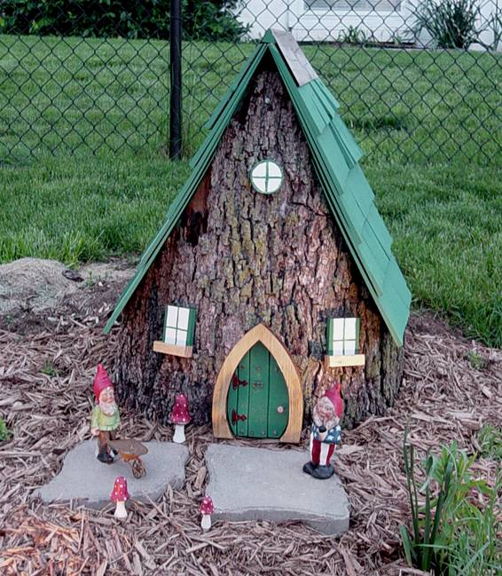
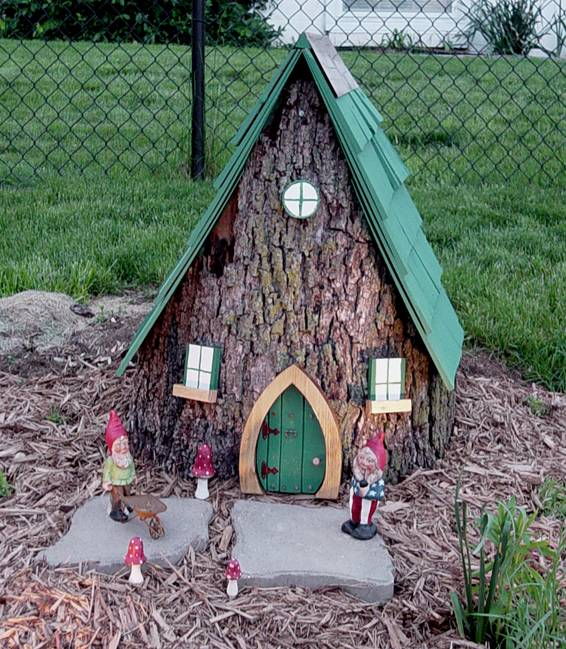
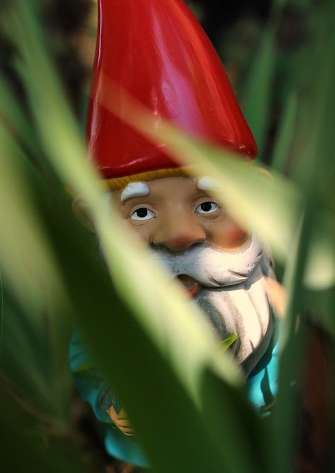

Gnomos
Menu
- Casas de Gnomos

 

- A veces los Gnomos se llaman David
Este video es un ejemplo
- Etimología:
La etimología del término no es clara. Para algunos proviene de la raíz griega gnosein, que significa conocer.
- Origen de la Leyenda
Fue usado por un alquimista suizo llamado Paracelso en 1566 y él decía que eran una presencia que conocía los secretos de la tierra.

- Los Gnomos y la música:
Los gnomos fabrican sus propios instrumentos musicales inimaginables. No desdeñan los creados por los humanos, sino que los hacen a su manera.
- Cuentos Populares:
En un cuento una princesa encuentra en el bosque al rey de los gnomos: Riquete; al regresar al mismo sitio oyó bajo sus pies ruido de preparativos, la tierra se abrió y pudo contemplar a los gnomos que preparaban el banquete con su poco agraciado rey.
- En Resumen:
Los Gnomos son bichos pequeñitos que a veces asustan pero me parecen bonitos gracias.